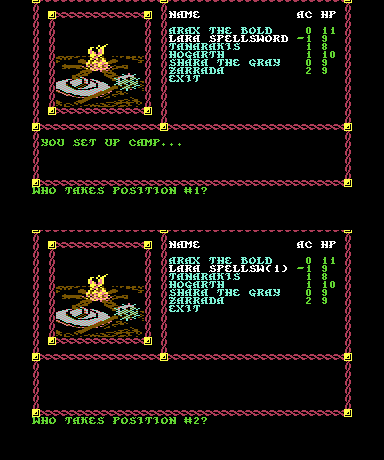
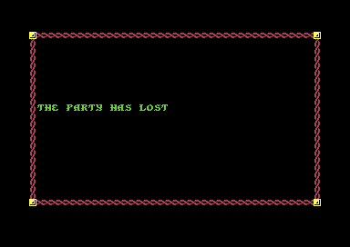

<meta charset="utf-8">
<meta name="viewport" content="width=device-width, initial-scale=1">
<title>Pool of Radiance · Discoveries</title>
<link rel="preconnect" href="https://fonts.googleapis.com">
<link rel="stylesheet" href="https://fonts.googleapis.com/css2?family=Lato:wght@400;700;900&family=IBM+Plex+Mono:wght@400;500&display=swap">
<style>
:root{
  --bg:#23262d; --paper:#e9e7e1; --surface:#ffffff; --surface-2:#f1efea; --line:#d5d3cc; --line-soft:#e0ded8;
  --ink:#2f3136; --ink-soft:#55585f; --ink-mute:#80838a;
  --link:#1f5fa8; --link-hover:#154480; --accent:#1f5fa8;
  --amber:#c25a00; --cyan:#1f5fa8; --coral:#d04a3a; --green:#2a8a4a; --violet:#4a5bd6; --hl:#fff0c2;
  --chip:#2f3136; --chip-ink:#ffffff;
  --c64blue:#40318d; --c64grey:#686868;
  --fd:'Lato',system-ui,sans-serif; --fb:'Lato',system-ui,sans-serif; --fm:'IBM Plex Mono',ui-monospace,Menlo,monospace;
  --col:1080px; --gx:68px; --fs:17px; --lh:1.6; --hw:900; --h1:46px; --h2:26px; --sy:48px; --pp:26px; --r:10px;
  --plate-shadow:0 1px 2px rgba(0,0,0,.05),0 4px 14px rgba(0,0,0,.05);
}
*{box-sizing:border-box}
html{background:var(--bg);min-height:100%}
body{background:var(--paper);color:var(--ink);font-family:var(--fb);font-size:var(--fs);line-height:var(--lh);max-width:var(--col);margin:0 auto;min-height:100vh;padding:0 0 4rem}
h1,h2,h3{font-weight:var(--hw);letter-spacing:-.01em;text-wrap:balance;color:var(--ink);margin:0}
.wrap{padding:0 var(--gx)}
.hero{padding:48px var(--gx) 8px;text-align:left}
.eyebrow{font-family:var(--fm);font-size:12px;letter-spacing:.08em;text-transform:uppercase;color:var(--ink-mute);margin:0 0 10px}
.hero h1{font-size:var(--h1);line-height:1.15;letter-spacing:-.02em;margin:0 0 14px}
.hero .sub{margin:0 0 .6em;color:var(--ink-soft)}
section{padding:var(--sy) 0 24px}
section:last-of-type{border-bottom:none}
.fig{font-family:var(--fm);font-size:12px;letter-spacing:.08em;text-transform:uppercase;color:var(--ink-mute);margin:0 0 10px}
h2.t{font-size:var(--h2);margin-bottom:12px}
.lede{color:var(--ink-soft);margin:0 0 30px}
.plate{background:var(--surface);border:1px solid var(--line);border-radius:var(--r);padding:var(--pp);box-shadow:var(--plate-shadow)}
.cap{font-size:14px;color:var(--ink-mute);margin-top:14px;line-height:1.55}
.cap b{color:var(--ink);font-weight:700}
code{font-family:var(--fm);font-size:.82em;background:var(--chip);color:var(--chip-ink);border-radius:4px;padding:2px 6px;white-space:nowrap}

.por-tbl{border-collapse:collapse;width:100%;font-size:14.5px;margin:10px 0}
.por-tbl th,.por-tbl td{border-bottom:1px solid var(--line-soft);padding:6px 8px;text-align:left;vertical-align:top}
.por-tbl th{font-family:var(--fm);font-size:11.5px;text-transform:uppercase;letter-spacing:.06em;color:var(--ink-mute);font-weight:500}
.por-m{font-family:var(--fm);font-size:.86em}
.por-two{display:grid;grid-template-columns:minmax(0,1fr) minmax(0,1fr);gap:18px;align-items:start}
.por-out{font-family:var(--fm);font-size:13px;background:var(--surface-2);border-radius:6px;padding:10px 12px;margin-top:12px;min-height:3.2em;white-space:pre-wrap}
.por-btns{display:flex;flex-wrap:wrap;gap:6px;margin:0 0 12px}
.por-btn{font-family:var(--fm);font-size:12.5px;border:1px solid var(--line);background:var(--surface);color:var(--ink);border-radius:6px;padding:5px 10px;cursor:pointer}
.por-btn[aria-pressed="true"]{background:var(--ink);color:#fff;border-color:var(--ink)}
.por-name{font-weight:700;margin:0 0 6px}
.por-btn:disabled{opacity:.4;cursor:default}
.por-fx{display:inline-block;font-family:var(--fm);font-size:12px;border:1px solid var(--line);background:var(--surface-2);border-radius:5px;padding:1px 7px;margin:0 6px 4px 0}
.por-fx.wrong{background:#fbe3df;border-color:var(--coral);color:#8a2a1e;font-weight:700}
.por-shot{margin:18px 0 0}
.por-shot img{width:100%;max-width:384px;image-rendering:pixelated;border-radius:4px;display:block}
.por-shot figcaption{font-size:13px;color:var(--ink-mute);margin-top:6px;line-height:1.4}
.por-runes{display:flex;flex-direction:column;gap:10px;margin:6px 0 12px}
.por-rune-line{background:#2f3136;border-radius:6px;padding:10px 12px}
.por-rune-line small{display:block;font-family:var(--fm);font-size:11.5px;color:#b9bcc2;margin:0 0 8px;line-height:1.45}
.por-rune-line small.por-rune-after{margin:8px 0 0}
.por-rune-row{display:flex;flex-wrap:wrap;gap:4px 0}
.por-rune{display:flex;flex-direction:column;align-items:center}
.por-rune canvas{image-rendering:pixelated;display:block}
.por-rune b{font-family:var(--fm);font-size:13px;color:#ffd34d;min-height:1.4em;font-weight:500;margin-top:4px}
.por-check{font-size:14px;color:var(--ink-soft);display:inline-flex;gap:6px;align-items:center;cursor:pointer}
.por-wide{overflow-x:auto}
@media (max-width:760px){.por-two{grid-template-columns:1fr}:root{--gx:18px}}
</style>
<!-- tabs -->
<header class="hero">
  <p class="eyebrow">1988 · SSI</p>
  <h1>Pool of Radiance</h1>
  <p class="sub">Bugs and secrets in the code and its scripts: password slips that spell the real passwords in runes, a clean river that cancels the council's meeting, thieves who pay the party each time it lets them reseal a box, and a change of marching order that moves spells onto the wrong people.</p>
</header>
<main class="wrap">

<section data-part="">
  <p class="fig">01 · The runes</p>
  <h2 class="t">Secret: the runes on the password slips spell the real passwords, one rune to a letter</h2>
  <p class="lede">Wherever the game shows writing in runes, it is a word the party will be asked for later. The giants' list in the castle barracks, the slips from a kitchen slave and from Porphyrys Cadorna, the sign over a door in Yarash's pyramid and the scroll on a dead elf at Sokal Keep all spell their words one rune to a letter.</p>
  <div class="plate">
    <div class="por-btns" id="por-rune-pick"></div>
    <p class="por-name" id="por-rune-where"></p>
    <div class="por-runes" id="por-rune-out"></div>
    <label class="por-check"><input type="checkbox" id="por-rune-show"> Show the letters</label>
    <p class="cap">Drawn from the game's own rune font, SECSET10 on every disk, and the character numbers the scripts print with their PRINT GLYPHS command. The scripts check the answers as plain words, so the party types HARASH, RHODIA, NOTNOW, LUX, SHESTNI or SAMOSUD.</p>
  </div>
  <p>There are two alphabets. The sign in the pyramid calls its runes dwarvish, and each one is a single character wide. The others are two characters wide and look like a flowing script. In the font both alphabets run in alphabetical order, and a letter has the same rune wherever it appears. The giants' list mixes the two: today's password in the wide runes, the gate's in the dwarvish ones.</p>
  <p>The pyramid's sign is the one to read with care. Any answer at that door but NOTNOW brings a monster whose scream costs every member 201 hit points, with no saving throw. The <a href="solution.html">Solution</a> tab lists every password and where each is asked for.</p>
</section>

<section data-part="">
  <p class="fig">02 · Cadorna</p>
  <h2 class="t">Secret: the party's return from the Zhentil outpost is what gives Cadorna away</h2>
  <p class="lede">Lord Cadorna sends the party to the Zhentil outpost as envoys, with a sealed packet. The commandant skims the papers, asks over dinner how strong New Phlan's defences are, and that night four guards attack the party in its sleep. When the party is back, the clerk at the city hall pays for the mission with one line: "We were pleasantly surprised that you completed your mission so swiftly. Cadorna was wagering your return would be much delayed."</p>
  <div class="plate">
    <table class="por-tbl">
      <thead><tr><th>How the council finds Cadorna out</th><th>Where</th></tr></thead>
      <tbody>
        <tr><td>The party comes back from the Zhentil outpost, and the clerk pays for the mission</td><td>The city hall</td></tr>
        <tr><td>The clerk reaches the end of the list of commissions on a visit, because two or fewer are left to offer</td><td>The city hall</td></tr>
        <tr><td>The party finds hard evidence that Cadorna has been seeking the Pool of Radiance for himself</td><td>The scribes' building at Valjevo Castle</td></tr>
      </tbody>
    </table>
    <p class="cap">Each of the three marks Cadorna a traitor in the same byte of the saved game. The clerk's line is the same however long the trip took: the script pays for the mission and marks him in one step.</p>
  </div>
  <p>From then on the clerk calls him the traitor Cadorna, who fled. The list moves on to Lord Urslingen and Stojanow Gate, and Porphyrys Cadorna turns up beaten and chained in a cell in the castle. Freed, he says he only thought the pool was there.</p>
</section>

<section data-part="">
  <p class="fig">03 · The council's meeting</p>
  <h2 class="t">Bug: killing Yarash before the council's special meeting means the meeting never takes place</h2>
  <p class="lede">Once the party has taken Stojanow Gate, the clerk summons it to a special meeting, and the whole council asks it to lead the attack on Valjevo Castle. The clerk offers the meeting only while one byte of the saved game, <code>$4A9A</code>, is below 254. The scene that shows the land recovering, after Yarash is dead, uses the same byte for a count of its own and leaves 255 in it.</p>
  <div class="plate">
    <div class="por-btns" id="por-meet-pick">
      <button type="button" class="por-btn" data-order="gate" aria-pressed="true">Take the gate, then kill Yarash</button>
      <button type="button" class="por-btn" data-order="river" aria-pressed="false">Kill Yarash, then take the gate</button>
    </div>
    <table class="por-tbl" id="por-meet"><thead><tr><th>What happens</th><th><code>$4A9A</code></th></tr></thead><tbody></tbody></table>
    <p class="cap">The city hall's script offers the meeting while the byte is below 254 and holds it when it is 254, then sets 255. The eastern wilderness's script runs the scene the first time the party leaves the pyramid's area with the river clean: 1 while it redraws the land, 255 when it is done.</p>
  </div>
  <p>Only the scene is lost. The gate's reward still ends with "return there to lead the attack", and nothing in the castle reads the byte, so the party can walk in and fight Tyranthraxus all the same.</p>
</section>

<section data-part="">
  <p class="fig">04 · Cadorna's box</p>
  <h2 class="t">Bug: Restal's thieves pay the party for resealing Cadorna's box, on every visit</h2>
  <p class="lede">Cadorna wants his family's iron box back with its seal unbroken. Restal, the old thief whose guild is reached through a well by the textile house, makes an offer: "We can duplicate the seal on that chest, for half the treasure. No one will ever know. Interested?" A yes takes nothing from the party. It gives the party half the treasure again, and marks the box as unopened.</p>
  <div class="plate por-wide">
    <table class="por-tbl">
      <thead><tr><th></th><th>Copper</th><th>Silver</th><th>Platinum</th><th>Gems</th><th>Jewelry</th><th>Items</th></tr></thead>
      <tbody>
        <tr><td>Inside the box</td><td>450</td><td>20</td><td>400</td><td>8</td><td>4</td><td>set 39</td></tr>
        <tr><td>Restal's "half"</td><td></td><td></td><td>200</td><td>4</td><td>2</td><td>set 39</td></tr>
      </tbody>
    </table>
    <p class="cap">From the treasure commands in the textile house's script. Both list the same set of items, the last of the eight amounts each command takes.</p>
  </div>
  <p>The offer comes on every visit to Restal once the box has been found, opened or not, until the council has paid for it. The script remembers the yes only among the 32 flags it keeps for the area, which the game clears when the party leaves, so a party can go out, come back and be paid again. A party that never opened the box is paid all the same. The city watch takes the box at New Phlan's gate, and the council's reward comes on top.</p>
</section>

<section data-part="">
  <p class="fig">05 · The fortune teller</p>
  <h2 class="t">Bug: the murdered fortune teller is back at her table on the party's next visit to the slums</h2>
  <p class="lede">A ragged old woman in the slums offers to tell the party's fortune for a few coppers. Attack her instead and the game says YOU EASILY MURDER THE OLD WOMAN, and THE GODS HAVE NOTED YOUR ACTIONS. The gods' note is real: the script forgets every fight the party has won in the slums. Her death is not, because the script keeps it in a flag the game clears as soon as the party leaves.</p>
  <div class="plate por-wide">
    <table class="por-tbl">
      <thead><tr><th></th><th>Fights won in the slums, <code>$4A80</code></th><th>The fortune teller, <code>$4A0B</code></th></tr></thead>
      <tbody>
        <tr><td>Kept</td><td>For the whole game</td><td>Until the party leaves the slums</td></tr>
        <tr><td>The murder sets it to</td><td>0</td><td>255</td></tr>
        <tr><td>What it decides</td><td>The patrols stop once it reaches 15, and it picks her fortune</td><td>At 255 she is gone, the patrols come more often and in bigger numbers, and a rest can be broken off</td></tr>
      </tbody>
    </table>
    <p class="cap">Every area's script has 32 flags of its own, <code>$4A00</code> to <code>$4A1F</code>, and the game clears them whenever the party enters another area. Bytes from <code>$4A20</code> on are kept for the whole game.</p>
  </div>
  <p>So on the next visit she is at her table with the same offer, and the patrols that had given up have to be beaten fifteen more times before they stop again.</p>
</section>

<section data-part="">
  <p class="fig">06 · The vampire</p>
  <h2 class="t">Secret: the vampire is weak and alone in his crypt if his coffin was sanctified first</h2>
  <p class="lede">In Valhingen Graveyard a tall, pale man waits in a pit with 50 wolves. Beaten, he turns into a cloud of vapour and floats away to his crypt of black marble, and the party fights him again there. A party that finds the crypt before the fight in the pit sees a coffin full of dust, broken crosses and spilled holy water, and can sanctify it with whatever holy items it can spare.</p>
  <div class="plate por-wide">
    <table class="por-tbl">
      <thead><tr><th>The fight in the crypt</th><th>His record on the disk</th><th>Hit points</th><th>With him</th></tr></thead>
      <tbody>
        <tr><td>As a rule</td><td>MON17</td><td>43</td><td>15 wolves</td></tr>
        <tr><td>After a sanctify, or straight after the fight in the pit</td><td>MON69</td><td>15</td><td>Nobody</td></tr>
      </tbody>
    </table>
    <p class="cap">The graveyard's script picks the record, and the hit points are in each record, both on the graveyard's disk. A party carrying the efreeti's bottle from the kobold caves has the efreeti on its side for one of the two fights, the first it carries the bottle into.</p>
  </div>
  <p>Once the vampire has fled to the crypt, walking in means the fight at once, so the coffin has to be sanctified before the fight in the pit. The sanctify is kept for the whole game. Coming straight from the pit works too, because the script counts that fight among the area's own flags, but only until the party leaves the graveyard.</p>
</section>

<section data-part="camp">
  <p class="fig">07 · The marching order</p>
  <h2 class="t">Bug: Changing the marching order can move a spell onto someone else</h2>
  <p class="lede">A spell that lasts a while is kept in a list of the effects in play, each with the party position of the member it is on. ORDER, in the camp's ALTER menu, moves those effects along when the party changes places, but it moves them one member at a time in the same list. An effect handed to a member who has not been dealt with yet gets handed on again when that member's turn comes.</p>
  <div class="plate">
    <div class="por-two">
      <div>
        <p class="por-name" id="por-ask">Who takes position #1?</p>
        <div class="por-btns" id="por-who"></div>
        <div class="por-btns">
          <button type="button" class="por-btn" id="por-undo">Take back</button>
          <button type="button" class="por-btn" id="por-swap">Lara first, Arax second</button>
          <button type="button" class="por-btn" id="por-rev">Turn the party round</button>
        </div>
      </div>
      <div>
        <table class="por-tbl" id="por-ord"><thead><tr><th>Position</th><th>Member</th><th>Effects on them afterwards</th></tr></thead><tbody></tbody></table>
      </div>
    </div>
    <div class="por-out" id="por-ord-out"></div>
    <p class="cap">The party the game comes with, as its saved game on the first disk has it, each member carrying one effect of its own. Choose who takes each position, as ORDER asks. The effects are then moved as the camp's code moves them (<code>$0AF9</code>, the code's address in memory): from the last position to the first, every effect on a member's old position goes to its new position.</p>
  </div>
  <p>Putting Lara Spellsword first and Arax the Bold second is enough. Lara's effect goes from position 2 to position 1, where Arax still is. Then Arax is moved to position 2 and takes everything on position 1 with him, Lara's effect included. In the game, with an effect put on Lara and the order changed that way, the game's list of effects had it on Arax afterwards.</p>
  <figure class="por-shot">
    
    <figcaption>ORDER in the camp: the first question, and the second after Lara Spellsword has taken position 1.</figcaption>
  </figure>
</section>

<section data-part="post-com">
  <p class="fig">08 · Treasure</p>
  <h2 class="t">Bug: Jewelry is never worth double</h2>
  <p class="lede">When a treasure holds gems or jewelry, each piece is given a worth as the party picks it up. A gem's worth can double, and double again, with a chance of one in ten each time. Jewelry has the same doubling written for it, and it never happens.</p>
  <div class="plate">
    <table class="por-tbl">
      <thead><tr><th>Piece</th><th>Doubles while</th><th>Out of 2,000 pieces</th></tr></thead>
      <tbody>
        <tr><td>Gem</td><td>a roll of 0 to 9 comes up 0</td><td>1,809 kept their worth, 172 doubled, 17 doubled twice, 2 three times</td></tr>
        <tr><td>Jewelry, the four cheaper kinds</td><td>a roll of 1 to 9 comes up 0</td><td>all 2,000 kept their worth</td></tr>
        <tr><td>Jewelry, the three dearer kinds</td><td>a roll of 1 to 4 comes up 0</td><td>all 2,000 kept their worth</td></tr>
      </tbody>
    </table>
    <p class="cap">The game's own code for each, run 2,000 times from different random numbers: the gem's loop (<code>$1C80</code>) and the jewelry's (<code>$1CE6</code>) for each of its seven kinds.</p>
  </div>
  <p>The gem's loop asks the random number routine for a number from 0 to 9 (<span data-part="resident"><code>$2DBC</code></span>), and doubles while it gets 0. The jewelry's loop asks a different routine, the one that rolls a die (<span data-part="resident"><code>$2DE0</code></span>), and doubles while that gives 0. A die starts at 1, so the loop ends on the first roll every time. A gem starts at a worth of 10 to 5,000, a piece of jewelry at 100 to 12,000.</p>
</section>

<section data-part="camp">
  <p class="fig">09 · Time</p>
  <h2 class="t">Bug: A month of rest in camp ages the party one day</h2>
  <p class="lede">The party grows older as it plays. After every battle the game adds the days that have gone by to each member's age, and a member past the limit for its race dies of old age: 80 years for a half-orc, 120 for a human. Resting in camp heals each member one hit point a day, so healing can take weeks, and the camp hardly counts them.</p>
  <div class="plate">
    <table class="por-tbl">
      <thead><tr><th>Where the time passes</th><th>Days gone by go up</th><th>Code</th></tr></thead>
      <tbody>
        <tr><td>Walking in town, in the dungeons and outdoors</td><td>each time the clock's day moves on</td><td><span data-part="tables"><code>$7A5F</code></span></td></tr>
        <tr><td>Resting in camp</td><td>each time the clock's day goes round from 30 to 0, once a month</td><td><code>$125A</code></td></tr>
      </tbody>
    </table>
    <p class="cap">The clock keeps minutes, tens of minutes, hours, days and months as figures of their own, each with the number it comes round at (<code>$127D</code>). Both routines watch the day figure, but the adventure's counts when it moves and the camp's only when it comes back round to 0. The ages are added after each battle (<span data-part="post-com"><code>$1E1B</code></span>).</p>
  </div>
  <p>In the game, a rest of one day in the slums moved the clock on a day and left the count of days gone by at 0. One step in New Phlan with the clock at 23:59 put it at 1. A party can rest for thirty days and grow one day older.</p>
</section>

<section data-part="dungeon">
  <p class="fig">10 · New Phlan</p>
  <h2 class="t">Secret: Nobody can rest in New Phlan</h2>
  <p class="lede">Make camp anywhere inside the town and the rest stops after five minutes with YOU ARE ROUSTED BY THE CITY WATCH AND TOLD TO MOVE ALONG. It is not a random encounter that happens to come up every time.</p>
  <p>The town's script sets the chance of the rest being interrupted to 101 in 100 whenever the party makes camp, so the camp's roll of 0 to 99 can never beat it, and the script's own fourth entry is the watch. The How it works page shows the script itself (<a href="index.html#por-scripts">the scripts</a>). In the slums outside the town, a rest of a whole day went through.</p>
</section>

<section data-part="post-com">
  <p class="fig">11 · The end</p>
  <h2 class="t">Secret: Losing a battle freezes the game for good</h2>
  <p class="lede">There is no screen offering another try. As a rule, when a battle leaves nobody in the party standing and nobody got away, the game prints THE PARTY HAS LOST, waits, and then runs a single instruction that jumps to itself (<code>$0957</code>), forever. The only way out is to reset the computer and load a saved game.</p>
  <div class="plate por-two">
    <figure class="por-shot">
      
      <figcaption>The last thing a lost game shows.</figcaption>
    </figure>
    <p class="cap">The code word at the start ends a game the same way. Before play the title shows runes and a path and asks for the word the code wheel in the box gives for them. A wrong word brings WRONG !!! and another question; a second wrong word brings WRONG !!! again and the same kind of jump to itself (<span data-part="title"><code>$12F4</code></span>).</p>
  </div>
</section>

<section data-part="dungeon">
  <p class="fig">12 · The scripts</p>
  <h2 class="t">Bug: Three script commands would be skipped wrongly after an IF</h2>
  <p class="lede">The script language has six IF commands. When an IF fails, the next command is skipped, and to skip it the game looks up how many operands it has in a table (<code>$1625</code>). For three commands the table is one short.</p>
  <div class="plate">
    <table class="por-tbl">
      <thead><tr><th>Command</th><th>Operands its routine reads</th><th>The table says</th></tr></thead>
      <tbody>
        <tr><td>SETUP MONSTER (12)</td><td>3</td><td>2</td></tr>
        <tr><td>ENCOUNTER MENU (41)</td><td>14</td><td>13</td></tr>
        <tr><td>ADD NPC (54)</td><td>2</td><td>1</td></tr>
      </tbody>
    </table>
    <p class="cap">The command's number in brackets. Skipping one of them after a failed IF would stop one operand short, and the game would read that operand as the next command.</p>
  </div>
  <p>It never shows. Decoded command by command, none of the scripts on the game's disks puts any of the three straight after an IF.</p>
</section>

</main>
<footer style="margin:16px 0 0;padding:22px var(--gx) 0;border-top:1px solid #e0ded8;font-family:'IBM Plex Mono',ui-monospace,Menlo,monospace;font-size:12px;color:#80838a"><a href="https://github.com/gamesexplained/gamesexplained" style="color:#1f5fa8;text-decoration:none">GitHub</a> · <a href="https://discord.gg/3V9GWyRDWV" style="color:#1f5fa8;text-decoration:none">Discord</a><br>© Games Explained contributors. Write-ups, facts and symbol maps are available under <a href="https://creativecommons.org/licenses/by-sa/4.0/" style="color:#1f5fa8;text-decoration:none">CC BY-SA 4.0</a>; code under <a href="https://opensource.org/licenses/MIT" style="color:#1f5fa8;text-decoration:none">MIT</a></footer>
<script>
/* por-order */
// ORDER's move of the timed effects (camp $0AF9-$0B18): from party slot 7 down, every effect whose
// holder ($4940) is a member's old slot is given its new slot ($28CE; bit 7 set, no member), all in
// the one column, so an effect already moved to a lower slot is moved again when that slot comes round.
function porOrder(newPos, holders) {
  const h = holders.slice();
  for (let x = 7; x >= 0; x--) {
    const p = newPos[x];
    if (p === undefined || p & 0x80) continue;
    for (let k = h.length - 1; k >= 0; k--) if (h[k] === x) h[k] = p;
  }
  return h;
}
// end of por-order

(() => {
  const PARTY = ['Arax the Bold', 'Lara Spellsword', 'Tanarakis', 'Hogarth', 'Shara the Gray', 'Zarrada'];
  const $ = (id) => document.getElementById(id);
  const own = (i) => PARTY[i].split(' ')[0] + "'s";
  let order = [1, 0, 2, 3, 4, 5];   // order[p]: the old place of the member who takes position p
  const who = $('por-who'), body = $('por-ord').tBodies[0], out = $('por-ord-out');
  const draw = () => {
    const done = order.length === PARTY.length;
    $('por-ask').textContent = done ? 'Every position taken.' : 'Who takes position #' + (order.length + 1) + '?';
    who.innerHTML = '';
    PARTY.forEach((n, i) => {
      const b = document.createElement('button');
      b.type = 'button'; b.className = 'por-btn'; b.textContent = n;
      b.disabled = order.includes(i);
      b.addEventListener('click', () => { order.push(i); draw(); });
      who.appendChild(b);
    });
    let held = null;
    if (done) {
      const newPos = Array(8).fill(0xFF);
      order.forEach((old, p) => { newPos[old] = p; });
      held = porOrder(newPos, PARTY.map((_, i) => i));
    }
    body.innerHTML = '';
    order.forEach((old, p) => {
      const tr = document.createElement('tr');
      tr.innerHTML = '<td>' + (p + 1) + '</td><td></td><td></td>';
      tr.children[1].textContent = PARTY[old];
      if (held) held.forEach((h, k) => {
        if (h !== p) return;
        const s = document.createElement('span');
        s.className = 'por-fx' + (k === old ? '' : ' wrong');
        s.textContent = own(k);
        tr.children[2].appendChild(s);
      });
      else tr.children[2].textContent = '…';
      body.appendChild(tr);
    });
    if (!held) { out.textContent = 'Choose the rest of the order.'; return; }
    const moved = held.map((h, k) => [k, order[h]]).filter(([k, m]) => k !== m);
    out.textContent = moved.length
      ? moved.map(([k, m]) => own(k) + ' effect is now on ' + PARTY[m] + '.').join('\n')
      : 'Every effect stayed with its member.';
  };
  $('por-undo').addEventListener('click', () => { order.pop(); draw(); });
  $('por-swap').addEventListener('click', () => { order = [1, 0, 2, 3, 4, 5]; draw(); });
  $('por-rev').addEventListener('click', () => { order = [5, 4, 3, 2, 1, 0]; draw(); });
  draw();
})();
</script>
<script>
/* por-runes */
// The rune font SECSET10, the same file on every disk: the 8 bytes of each character the scripts print
// in runes, top row first, bit 7 the left pixel (file offset 2 + (code - $40) * 8).
const POR_GLYPHS = {"40":"0101001F00000000","41":"808000F800000000","46":"000C12180F010300","47":"6C006000F0888000","48":"0E03000000000100","49":"00F010F02060C000","4E":"00000001071C7C00","4F":"083CE44222662200","50":"0003060406030000","51":"00C0208020C00000","56":"0102020202020200","57":"E010106000000000","58":"000003344C4B3000","59":"3C42C0627C800000","5A":"0F10100F10100F00","5B":"000000FC00000000","5C":"0718204641211E00","5D":"E018046282847800","65":"0E10100F10100800","66":"001E33E1331E0000","67":"0718307F41030600","68":"C08000FC82924C00","69":"060910130C070000","6A":"0000008040A02418","6B":"0000003F60403800","6C":"0E0103FE00000000","71":"387F001824201F00","72":"00FC026191C2FC00","79":"1E1E181818181800","7C":"7F49490808080800","80":"3F130B0703030300","81":"7E46666633333F00","86":"0C0C3F0C3F0C0C00","87":"0C0C0C0C3F0C0C00","8A":"1C16137113161C00","8C":"30382C3438282000","8F":"60361C1818181F00"};
// Each rune's letter: the wide runes by the first of their two characters, the dwarvish by their one.
const POR_WIDE = {"40":"A","46":"D","48":"E","4E":"H","50":"I","56":"L","58":"M","5A":"N","5C":"O","65":"R","67":"S","69":"T","6B":"U","71":"X"};
const POR_DWARF = {"79":"A","7C":"D","80":"H","81":"I","86":"N","87":"O","8A":"R","8C":"T","8F":"W"};
// The strings the scripts print with PRINT GLYPHS (barracks $A4AA and $A4B7, the slips $A4B7 and
// castle grounds $AAE7, the pyramid $A56E, Sokal Keep $AF20, $AF27 and $AF36), with the text around them.
const POR_WRITINGS = [
  {name: "The giants' list", where: "In the castle's barracks, and on the piece of paper on the barracks' ground",
   lines: [["TODAY'S PASSWORD IS", "4E4F40416566404167684E4F"], ["THE GATE PASSWORD IS", "8A80877C8179"]]},
  {name: "The slips", where: "From the kitchen slave in the barracks, and from Porphyrys Cadorna once he is freed",
   lines: [["HERE IS TODAY'S GATE PASSWORD.", "8A80877C8179"]]},
  {name: "The sign in the pyramid", where: "Over a door in the lower level of Yarash's pyramid",
   lines: [["IT SAYS, 'DON'T FORGET THE PASSWORD'. THIS IS FOLLOWED BY SIX DWARVISH RUNES...", "86878C86878F"]]},
  {name: "The dead elf's scroll", where: "On a dead elf in the reeds by the gate of Sokal Keep",
   lines: [["A CRUMBLING PARCHMENT SCROLL WITH THE WORDS ...", "56576B6C7172"], ["", "6768404158595C5D67686B6C4647"], ["", "67684E4F48496768696A5A5B5051"]],
   after: "... THE LAST PART IS EATEN AWAY."},
];
// Splits a printed string into runes: [letter, [codes]].
function porRunes(hex) {
  const c = hex.match(/../g), out = [];
  for (let i = 0; i < c.length; ) {
    if (POR_WIDE[c[i]]) { out.push([POR_WIDE[c[i]], [c[i], c[i + 1]]]); i += 2; }
    else { out.push([POR_DWARF[c[i]] || "?", [c[i]]]); i += 1; }
  }
  return out;
}
// end of por-runes

(() => {
  const pick = document.getElementById('por-rune-pick');
  if (!pick) return;
  const out = document.getElementById('por-rune-out'), where = document.getElementById('por-rune-where');
  const show = document.getElementById('por-rune-show');
  let cur = 0;
  const draw = () => {
    const w = POR_WRITINGS[cur];
    where.textContent = w.where;
    out.innerHTML = '';
    const widest = Math.max(...w.lines.map(l => l[1].length / 2));
    const room = Math.max(120, out.clientWidth - 28);
    const s = Math.max(2, Math.min(4, Math.floor(room / (widest * 8))));
    w.lines.forEach(([said, hex]) => {
      const line = document.createElement('div'); line.className = 'por-rune-line';
      if (said) { const t = document.createElement('small'); t.textContent = said; line.appendChild(t); }
      const row = document.createElement('div'); row.className = 'por-rune-row';
      porRunes(hex).forEach(([letter, codes]) => {
        const cell = document.createElement('span'); cell.className = 'por-rune';
        const cv = document.createElement('canvas'); cv.width = codes.length * 8 * s; cv.height = 8 * s;
        const g = cv.getContext('2d'); g.fillStyle = '#e9e7e1';
        codes.forEach((code, k) => {
          const b = POR_GLYPHS[code].match(/../g).map(h => parseInt(h, 16));
          b.forEach((byte, y) => { for (let x = 0; x < 8; x++) if (byte & (0x80 >> x)) g.fillRect((k * 8 + x) * s, y * s, s, s); });
        });
        cv.setAttribute('role', 'img'); cv.setAttribute('aria-label', 'a rune for ' + letter);
        const l = document.createElement('b'); l.textContent = show.checked ? letter : ' ';
        cell.append(cv, l); row.appendChild(cell);
      });
      line.appendChild(row); out.appendChild(line);
    });
    if (w.after) { const t = document.createElement('small'); t.className = 'por-rune-after'; t.textContent = w.after; out.lastChild.appendChild(t); }
    [...pick.children].forEach((b, i) => b.setAttribute('aria-pressed', i === cur));
  };
  POR_WRITINGS.forEach((w, i) => {
    const b = document.createElement('button'); b.type = 'button'; b.className = 'por-btn'; b.textContent = w.name;
    b.addEventListener('click', () => { cur = i; draw(); });
    pick.appendChild(b);
  });
  show.addEventListener('change', draw);
  addEventListener('resize', draw);
  draw();
})();

(() => {
  // The byte $4A9A through the two orders: the city hall's script (offer below 254, meeting at 254,
  // then 255) and the eastern wilderness's land-recovery scene (1 while it redraws, then 255).
  const ORDERS = {
    gate: [["A new game", "0"],
           ["The party takes Stojanow Gate, and the clerk pays for it", "0"],
           ["The clerk summons the party to a special council meeting", "254"],
           ["The Lord High Mayor asks the party to lead the attack on Valjevo Castle", "255"],
           ["The party kills Yarash and leaves the pyramid, and the land begins to recover", "1, then 255"]],
    river: [["A new game", "0"],
            ["The party kills Yarash and leaves the pyramid, and the land begins to recover", "1, then 255"],
            ["The party takes Stojanow Gate, and the clerk pays for it", "255"],
            ["The clerk: THESE ARE ALL OF THE COMMISSIONS CURRENTLY AVAILABLE. No meeting, then or later", "255"]],
  };
  const pick = document.getElementById('por-meet-pick');
  if (!pick) return;
  const body = document.getElementById('por-meet').tBodies[0];
  const draw = (k) => {
    body.innerHTML = '';
    ORDERS[k].forEach(([what, v]) => {
      const tr = document.createElement('tr');
      const a = document.createElement('td'); a.textContent = what;
      const b = document.createElement('td'); b.textContent = v; b.className = 'por-m';
      tr.append(a, b); body.appendChild(tr);
    });
    [...pick.children].forEach(b => b.setAttribute('aria-pressed', b.dataset.order === k));
  };
  [...pick.children].forEach(b => b.addEventListener('click', () => draw(b.dataset.order)));
  draw('gate');
})();
</script>
